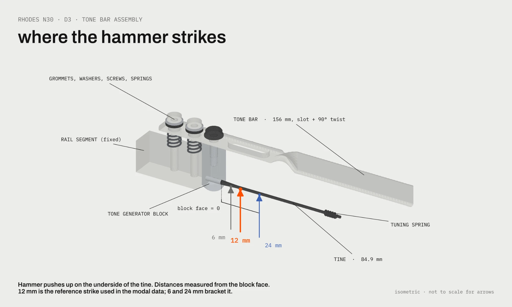

sound
microscope
Load a recording of one note and take it apart: its envelope, its harmonics, how each harmonic decays, how the pitch and brightness move. Then rebuild it from the measurements and hear what is missing.
load a sound
Use a single, isolated note: one piano key, one trumpet note, one bowed cello note, one guitar string, one key of a Rhodes. Dry recordings work best. The file never leaves your computer. All the maths runs in the browser.
WAV, AIFF, FLAC, MP3, M4A or OGG · the first 30 seconds are analysed
envelope
The top screen is the raw waveform. The lower screen is the loudness in decibels over time, the envelope. On a dB scale, an exponential decay becomes a straight line, so you can read the decay rate as a slope. Click either screen to move the orange cursor. The harmonic chapters below analyse the sound at the cursor.
2.1two-stage decay
Many struck and plucked instruments decay in two stages: a fast early drop, then a slow tail. In a piano, energy first leaves through the vertical motion of the string, then the horizontal motion sings on. A guitar string does the same, and in a Rhodes the tine and its tonebar trade energy. Bowed and blown instruments (cello, trumpet, flute, sax) are different: the player keeps feeding energy in, so there is no natural decay. The envelope shows the player's bow or breath instead, and the decay readout only describes the release. The readout fits the early slope (first 20 dB) and the late slope separately. A plain synth envelope with one decay knob can only do one of them.
2.2tremolo
The readout also looks for slow, regular wobbles in loudness between 1 and 15 Hz. A vibraphone with its motor on, a Rhodes Suitcase with its tremolo, or a guitar amp's tremolo shows a clear rate and depth here. Vibrato on a cello, violin, flute or voice usually shows up too, at about 5–6 Hz. The pitch moves, but the level of each harmonic also moves as it slides across the body or tube resonances. Beating between two slightly detuned piano strings appears as a slower modulation.
spectrogram
A spectrogram is many spectra side by side, one every ~10 ms. Time runs left to right, frequency runs up (on a musical, logarithmic scale), and brightness is level. Each harmonic becomes a horizontal line. You can see which lines fade first, and any short vertical smear at the start is the attack transient: hammer, pick or tine noise that is not part of the harmonic series.
harmonics at the cursor
This is a high-resolution Fourier spectrum of about a third of a second of sound around the cursor. Orange ticks mark where perfect harmonics should be (n × f0). The table lists what was actually found at each one.
4.1inharmonicity
Real strings are a little stiff, so their upper partials run sharp, more and more the higher they go. The cents column shows how far each partial sits from a perfect harmonic (100 cents = one semitone). The readout fits the piano-tuner's formula fn = n·f0·√(1 + B·n²) and reports B. A bass piano string has B around 0.0001, a treble string 0.001 or more. Perfectly harmonic synths have B = 0. This stretch is one reason pianos are tuned "stretched", with high notes slightly sharp.
4.2odd, even and noise
The odd/even balance compares harmonics 3, 5, 7… against 2, 4, 6… A symmetric wave has only odd harmonics (chapter 3 of the guide). A clarinet in its low register is the classic acoustic example: its odd harmonics are much stronger than the even ones. A trumpet, a sax or a bowed string has a balanced mix. In a Rhodes the pickup sits slightly off-centre from the tine, which makes the wave lopsided and adds even harmonics. Harmonic energy is how much of the sound sits on the found harmonics, versus noise and inharmonic partials between them.
harmonic decay
This is the measurement that separates real instruments from simple synths. Each line is the level of one harmonic over time, tracked through the spectrogram. In a basic subtractive or additive patch every harmonic follows the same envelope. In a real instrument each harmonic has its own life: upper harmonics usually start louder and die faster, which is why a note gets darker as it rings.
pitch & brightness
Two small details that are easy to hear and hard to program. The pitch track shows how far the pitch moves from its average, in cents. Struck and plucked notes (piano, guitar, Rhodes) often start a little sharp and settle, because the string or tine is stretched further during a loud attack. Brass and sax players often scoop up into the note from slightly flat, and string players and singers add vibrato, a regular wave of about 5–6 Hz and ±10–30 cents. The brightness track is the spectral centroid, the balance point of the spectrum. It usually starts high at the attack and falls as the upper harmonics die.
resynthesis
Now rebuild the note from the numbers, using 24 sine waves at the measured partial frequencies. Compare three versions to hear what each measurement contributes.
- Static: the harmonic mix measured at the cursor, with one overall envelope. This is what a simple additive or wavetable patch does.
- Tracked: every partial follows its own measured envelope from chapter 5. Much closer, and the note darkens as it rings.
- Original: the recording. What is still missing from "tracked" is mostly the attack noise, the beating and the phase relationships. That residue is exactly what makes the real instrument hard to fake.
from simulation to sound
A modal simulation (finite elements, in CAD tools such as Onshape, SolidWorks or COMSOL) finds the ways a part likes to vibrate. Each mode has a frequency and a shape. For a tine and tonebar that is exactly the list of partials the instrument can play. This lab turns that list into a sound you can hear and then analyse with the rest of this page.
A simulation gives you some of what you need, but not all of it:
- Frequencies: yes. They become the partials, as they are.
- How loud each mode is: not directly. A mode shape has no real size. The "1 mm" deformation in the viewer is only a display scale. But the energy the tool reports at that scale tells you how stiff the mode is:
k = 2E / d². From the stiffness and the frequency you get the mode's effective mass:m = k / ω², with ω = 2π·f. - Decay: no. A modal solve contains no damping at all, so nothing in it says how long a mode rings. Damping has to come from measurement or experience. Here it comes from two knobs.
8.1energy → stiffness → mass → loudness
Worked example: mode 1 at 1161 Hz shows 0.012 J at 1 mm. Then k = 2 × 0.012 / 0.001² = 24,000 N/m, ω = 2π × 1161 = 7,295 rad/s, and m = 24,000 / 7,295² ≈ 0.45 g. That is the part of the tine's mass that really takes part in this vibration.
A hammer blow is a short push, an impulse J (force × time, in N·s). It gives each mode a starting speed v = J × w / m, where w (0–1) is how much the hammer point moves in that mode's shape: 1 at the mode's peak, 0 at a node. Light modes (small m) get going faster from the same blow. A real hammer also stays in contact for a moment (about 0.3–1 ms for felt or neoprene). Modes much faster than that contact time are barely excited, which is why the contact time knob darkens the sound.
The pickup or microphone does not hear position. A magnetic pickup follows velocity, and the sound radiated into the air follows acceleration more closely. Switch between them to hear how much this changes the balance: each step up multiplies a mode's level by its ω, so high modes come forward.
| mode | frequency (Hz) | energy at ref. (J) | hammer w (0–1) | k (N/m) | m (g) | T60 (s) | start level |
|---|
paste a mode list
8.2static and dynamic
The left screen is the static picture: one bar per mode at its starting level, with its ratio to mode 1. The dashed lines mark where perfect harmonics (×2, ×3…) would be, so you can see at once how inharmonic the part is. The right screen is the dynamic picture: every mode falls in a straight line in dB, steeper for higher modes. Press analyse it in the microscope and the simulated note goes through chapters 2–7 like a recording, so you can compare it with a real one.
The two damping knobs set the decay time at 1 kHz and at 8 kHz. Every mode in between follows a standard engineering model, Rayleigh damping. To set them from reality, record the real part, load it in chapter 1 and read the T60 values in the harmonics table in chapter 4.
8.3bring your own simulation
A whole assembly has many more modes than a tine on its own: the tone bar bends and twists, the block rocks on its rubber grommets, the mounting springs bounce. To bring such a solve here, save it as a modal data file, a small .json in the format sfg-modal/1, and drop it on the lab above (or press import .json). The file fills the table and the knobs, can give every mode its own T60, and can hold several strike points. Buttons appear to switch between them, so you can hear what moving the hammer does.
For a file, w is the strike point's motion divided by the listening point's motion, signed. It can be negative (that point moves the other way in this mode) or above 1. From mass-normalised mode shapes φ, with listening point p, strike point s and reference deformation d:
m = 1 / φ(p)² E = ½ · m · ω² · d² w = φ(s) / φ(p)
The page then gives each mode the starting speed v = J · w · H(ω) / m, where H is the spectrum of the half-sine hammer. That is exact modal superposition for a short point blow, so the note you hear is the simulated response at the pickup.

instructions block that explains every step (you can hand it to a person, a script or an AI model together with the solver output), and a figure.spec block that describes the drawing to make from the STEP file in the same style as the one above: canvas, isometric view, shading, labels, the coloured strike arrows. Put the image's path in figure.src and the lab shows it when the file loads. The full field list is in MODAL_FORMAT.md.8.4how far, how fast, how sudden
Every mode is a plain back-and-forth swing. You can describe that swing in three ways: how far the point moves (position, or displacement), how fast it moves (speed, or velocity), and how suddenly its speed changes (acceleration). Different listeners react to different ones, and that changes which modes you hear.
The tip of a tine in slow motion. The three traces are the same swing seen by a ruler, a speedometer and a "push" meter. Watch where each one peaks.
furthest from the middle · stopped for an instant · pushed hardest, because it is turning round
no distance · fastest · no push: it just coasts through
speed = distance × 2π·f
acceleration = speed × 2π·f
each step multiplies by the frequency
Two tips that swing exactly the same distance, one at a higher frequency. The faster one has to cover the same distance in less time, so it moves faster, and it has to turn round more often, so it is pushed much harder.
So with the same swing, twice the frequency means twice the speed and four times the acceleration; three times the frequency, nine times. But a real tine does not swing the same in every mode. Higher modes are stiffer, and the same hammer blow bends them less. Press the two Rhodes buttons above: the right tip is then the tone bar's first bending at 511 Hz, the left one the note at 165 Hz, with the swings the simulation gives. At 12 mm the small, fast swing still wins in acceleration. At 24 mm the note swings so much more that it wins everywhere.
The Rhodes N30 · D3 file, all 15 modes at the moment of the hammer blow. Pick a listener: each step to the right tilts the whole picture up by 6 dB per octave, so the high modes come forward.
| listener | reacts to | everyday picture | button in the lab |
|---|---|---|---|
| Wurlitzer (electrostatic), FE viewer | how far | a dimmer: its position sets the light | displacement |
| Rhodes, guitar (magnet + coil) | how fast | a bicycle dynamo: no riding, no light | velocity (pickup) |
| the air, your ear, a microphone | how suddenly | a clap is loud, a slow wave of the hand is silent | acceleration (air) |
how deep can we go
Analysis goes in layers. Each layer needs more careful recordings and gives you more of what makes an instrument itself.
- One number per sound. Level, duration, pitch, crest factor. Easy, and says little about timbre.
- One spectrum. Which harmonics, how loud, odd/even balance. Enough to build a static patch.
- Spectra over time. Envelope, per-harmonic decay, centroid, pitch drift. Enough for a convincing additive model. This page measures up to here.
- Fitted physical parameters. Inharmonicity B, two-stage decay times, beating rates, tremolo. These are the numbers physical-modelling synths are tuned with. This page gives first estimates of them.
- Many recordings together. The real character of an instrument lives in how these numbers change: across velocities, across the keyboard, across pickup settings. That needs a set of recordings and a spreadsheet, not one file.
9.1what makes real instruments hard to simulate, and how to measure it
| feature | where it comes from | how to see it here |
|---|---|---|
| piano: stretched partials | Stiff steel strings make the upper partials run sharp. | The cents column and B in chapter 4. |
| piano: beating & double decay | Two or three strings per note, never perfectly in tune, plus vertical and horizontal string motion. | Wavy lines in chapter 5, early vs. late decay in chapter 2. |
| trumpet: brassiness | The lips and the bell work as a non-linear system: louder playing adds far more upper harmonics. | Brightness rising with level in chapter 6, upper harmonics starting later in chapter 5. |
| cello & violin: living tone | Vibrato moves every harmonic across body resonances fixed in Hz, and the bow adds rosin noise. | Pitch wave in chapter 6, rippling harmonic lines in chapter 5, harmonic energy below 100 % in chapter 4. |
| flute & sax: breath | Turbulent air at the embouchure or reed, plus a "chiff" at the start. | Haze between the harmonic lines in the spectrogram, lower harmonic energy in chapter 4. |
| guitar: pluck position | Plucking at 1/n of the string length cancels harmonic n and its multiples. | Missing harmonics (gaps in the bars) in chapter 4. |
| rhodes: bark | The pickup's magnetic field is non-linear. A tine swinging further gets more distorted, which adds harmonics. | Compare soft vs. hard notes in chapter 5. Upper harmonics are louder and decay faster when hard. |
| rhodes: tine clang | The tine's own vibration modes are inharmonic: about 6.3× and 17.5× the fundamental for a clamped bar. They ring for a few milliseconds. | A short bright line in the spectrogram at the attack, well off the harmonic grid. |
| rhodes: even harmonics | The tine sits slightly off-centre in front of the pickup, so the wave is lopsided. | Odd/even balance in chapter 4. Change the pickup alignment and this number moves. |
| rhodes: two-stage decay | The tine and tonebar form a coupled pair and trade energy. | Early vs. late decay in chapter 2. |
| pitch settle | Loud strikes bend a piano string, guitar string or Rhodes tine further. Its pitch settles as the swing shrinks. | The pitch track in chapter 6, over the first 100 ms. |
| rhodes: tremolo & amp | The Suitcase's stereo tremolo and the amplifier's own saturation. | Tremolo rate and depth in chapter 2. Amp saturation shows as extra harmonics at high levels. |
9.2limits of this page
- One note at a time. Chords and melodies confuse the pitch detector and mix the harmonic series together.
- Room and reverb smear the decay times. Reverb makes the late decay look longer than the instrument's own.
- MP3 and AAC often cut everything above 16 kHz and add artefacts in quiet tails. Use WAV or FLAC when you can.
- Resolution trade-off. Short windows show fast changes but blur frequencies; long windows separate close partials but blur time. The spectrogram uses about 85 ms windows, and the cursor spectrum about 340 ms. Very low notes (below ~50 Hz) and very fast attacks are at the edge of both.
- Beyond this page: a full physical-model fit, noise/residual separation and machine-learning timbre models are research tools (for example the sinusoidal modelling in SMS or Loris, or DDSP). They build on exactly the measurements shown here.